options(
knitr.table.format = "html",
scipen = 999
)Cargar paquetes
ipak <- function(pkg){
options(repos = c(CRAN="https://cloud.r-project.org"))
new.pkg <- pkg[!(pkg %in% rownames(installed.packages()))]
if(length(new.pkg)) install.packages(new.pkg, dependencies = TRUE)
invisible(lapply(pkg, function(p)
suppressPackageStartupMessages(library(p, character.only = TRUE))
))
}
packages <- c("tidyverse","kableExtra","psych","readxl")
ipak(packages)Introducción
Distribución de Frecuencias
La distribución de frecuencias se define como un método estructurado para la ordenación y síntesis de datos estadísticos. Su función principal es transformar un conjunto de observaciones dispersas \(X = \{x_1, x_2, \dots, x_n\}\) en información procesable, agrupando los valores según su incidencia en categorías o intervalos específicos.
El uso de este sistema permite:
Simplificación: Reducir grandes volúmenes de datos sin perder su esencia informativa.
Análisis Visual: Sentar las bases para la creación de cartografía estadística y gráficos de alta precisión.
Descripción Probabilística: Facilitar el cálculo de medidas de tendencia central y dispersión.
Componentes de la Estructura de Datos
Para un análisis exhaustivo, la tabla de frecuencias integra los siguientes parámetros:
library(knitr)
library(kableExtra)
# 1. Definicion de datos (Saneado)
componentes_data <- data.frame(
Parametro = c(
"Clase",
"Frecuencia Absoluta (f\u1d62)", # fᵢ
"Frecuencia Relativa (h\u1d62)", # hᵢ
"Frecuencia Acumulada (F\u1d62)", # Fᵢ
"Marca de Clase (x\u1d62)" # xᵢ
),
Funcion = c(
"Segmento o categoría de la variable en estudio.",
"Conteo directo de ocurrencias por cada clase.",
"Peso porcentual o proporcional de cada categoría respecto al todo.",
"Sumatoria sucesiva que indica el volumen de datos bajo un umbral.",
"Valor representativo (punto medio) de un intervalo."
)
)
# 2. Generacion de la tabla
componentes_data %>%
kable(
format = "html",
booktabs = TRUE,
escape = FALSE,
align = "cl",
col.names = c("Parámetro", "Función Analítica"),
caption = "Componentes de la Estructura de Datos"
) %>%
kable_styling(
latex_options = c("striped", "hold_position"),
full_width = F,
font_size = 11
) %>%
row_spec(0, bold = TRUE, color = "white", background = "#2C3E50") %>%
column_spec(1, bold = TRUE, width = "4cm") %>%
column_spec(2, width = "9cm")| Parámetro | Función Analítica |
|---|---|
| Clase | Segmento o categoría de la variable en estudio. |
| Frecuencia Absoluta (fᵢ) | Conteo directo de ocurrencias por cada clase. |
| Frecuencia Relativa (hᵢ) | Peso porcentual o proporcional de cada categoría respecto al todo. |
| Frecuencia Acumulada (Fᵢ) | Sumatoria sucesiva que indica el volumen de datos bajo un umbral. |
| Marca de Clase (xᵢ) | Valor representativo (punto medio) de un intervalo. |
Formalización Matemática de las Frecuencias
1) Frecuencia Absoluta y Relativa
La frecuencia absoluta representa la cantidad de registros en una clase. La suma total de estas debe ser equivalente al tamaño muestral: \[\sum_{i=1}^{k} f_i = n\] Por su parte, la frecuencia relativa normaliza los datos para su comparación, calculándose como: \[h_i = \frac{f_i}{n}\]
Este valor se expresa frecuentemente de forma porcentual (\(h_i \times 100\)), donde la unidad representa la totalidad del conjunto (\(\sum h_i = 1\)).
2) Acumulación de Datos
La frecuencia acumulada (\(F_i\)) resulta de la integración progresiva de las frecuencias absolutas:
\[F_i = \sum_{j=1}^{i} f_j\]
Este indicador es vital para determinar cuántas observaciones se encuentran por debajo de un límite superior determinado. De igual forma, la frecuencia relativa acumulada (\(H_i\)) ofrece la proporción acumulada de la muestra.
Tratamiento de Datos Agrupados
En contextos de alta variabilidad, se recurre a la agrupación por intervalos \([L_i, L_s)\). Para garantizar una estructura equilibrada, aplicamos:
1) Regla de Sturges: Para definir el número óptimo de clases (\(k\)):\[k = 1 + 3.322 \log_{10}(n)\]
2) Rango (\(R\)): La amplitud total de la serie (\(X_{max} - X_{min}\)).
3) Amplitud (\(A\)): La extensión de cada intervalo, calculada como \(A = R / k\).
4) Marca de Clase (\(x_i\)): El centro del intervalo, esencial para cálculos de momentos estadísticos: \[x_i = \frac{L_i + L_s}{2}\]
Visualización y Salidas Gráficas
La distribución de frecuencias culmina en la representación visual, permitiendo identificar la “forma” de los datos a través de:
Histogramas y Polígonos: Para observar la densidad y tendencia.
Ojivas: Para el análisis de frecuencias acumuladas.
Diagramas de Sectores: Para la distribución proporcional de categorías.
Bajar el Dataset
Leer el Datased
library(readxl)
educacion <- read_excel("educacion.xlsx")Conocer el Dataset
- Mostrar algunas filas del dataset
head(educacion)# A tibble: 6 × 10
ID Genero Nivel_Educativo Estrato Cursos Horas Promedio `Asistencia (%)`
<dbl> <chr> <chr> <chr> <dbl> <dbl> <dbl> <dbl>
1 1 Femenino Universidad Alto 5 26.8 4.37 51.3
2 2 Femenino Universidad Bajo 4 9.05 4.9 51.1
3 3 Femenino Secundaria Medio 8 28.2 1.26 92.4
4 4 Femenino Universidad Bajo 6 17.9 1.96 64.8
5 5 Masculino Universidad Alto 4 15.9 3.6 57.0
6 6 Masculino Primaria Bajo 2 27.6 4.58 76.1
# ℹ 2 more variables: Tecnologia <chr>, Satisfaccion <chr>- Número de variables
library(tidyverse)
educacion %>% names %>% length()[1] 10- Nombres de las variables
names(educacion) [1] "ID" "Genero" "Nivel_Educativo" "Estrato"
[5] "Cursos" "Horas" "Promedio" "Asistencia (%)"
[9] "Tecnologia" "Satisfaccion" - Estructura de las variables
glimpse(educacion)Rows: 300
Columns: 10
$ ID <dbl> 1, 2, 3, 4, 5, 6, 7, 8, 9, 10, 11, 12, 13, 14, 15, 16…
$ Genero <chr> "Femenino", "Femenino", "Femenino", "Femenino", "Masc…
$ Nivel_Educativo <chr> "Universidad", "Universidad", "Secundaria", "Universi…
$ Estrato <chr> "Alto", "Bajo", "Medio", "Bajo", "Alto", "Bajo", "Baj…
$ Cursos <dbl> 5, 4, 8, 6, 4, 2, 2, 6, 8, 4, 6, 2, 2, 6, 8, 5, 1, 8,…
$ Horas <dbl> 26.82, 9.05, 28.19, 17.86, 15.87, 27.63, 3.31, 14.81,…
$ Promedio <dbl> 4.37, 4.90, 1.26, 1.96, 3.60, 4.58, 1.47, 3.89, 4.65,…
$ `Asistencia (%)` <dbl> 51.29, 51.06, 92.35, 64.85, 57.01, 76.11, 84.15, 93.2…
$ Tecnologia <chr> "Bajo", "Bajo", "Bajo", "Medio", "Alto", "Medio", "Ba…
$ Satisfaccion <chr> "Muy alta", "Media", "Muy alta", "Muy alta", "Muy baj…- Transformar las variables
#VARIABLES CUALITATIVA NOMINAL
educacion$Genero <- as.factor(educacion$Genero)
#VARIABLES CUALITATIVAS ORDINALES
educacion$Nivel_Educativo <- factor(educacion$Nivel_Educativo,
levels = c("Primaria", "Secundaria", "Universidad"),
ordered = TRUE)
educacion$Estrato <- factor(educacion$Estrato,
levels = c("Bajo", "Medio", "Alto"),
ordered = TRUE)
educacion$Tecnologia <- factor(educacion$Tecnologia,
levels = c("Bajo", "Medio", "Alto"),
ordered = TRUE)
educacion$Satisfaccion <- factor(educacion$Satisfaccion,
levels = c("Muy baja","Baja", "Media", "Alta", "Muy alta"),
ordered = TRUE)
#VARIABLES CUANTITATIVAS DISCRETAS
educacion$Cursos = as.integer(educacion$Cursos)
educacion$Horas = as.numeric(educacion$Horas)
educacion$Promedio = as.numeric(educacion$Promedio)
names(educacion)[names(educacion) == "Asistencia (%)"] <- "Asistencia"
educacion$Asistencia = as.numeric(educacion$Asistencia)- Nueva estructura de las variables
library(dplyr)
glimpse(educacion)Rows: 300
Columns: 10
$ ID <dbl> 1, 2, 3, 4, 5, 6, 7, 8, 9, 10, 11, 12, 13, 14, 15, 16,…
$ Genero <fct> Femenino, Femenino, Femenino, Femenino, Masculino, Mas…
$ Nivel_Educativo <ord> Universidad, Universidad, Secundaria, Universidad, Uni…
$ Estrato <ord> Alto, Bajo, Medio, Bajo, Alto, Bajo, Bajo, Medio, Medi…
$ Cursos <int> 5, 4, 8, 6, 4, 2, 2, 6, 8, 4, 6, 2, 2, 6, 8, 5, 1, 8, …
$ Horas <dbl> 26.82, 9.05, 28.19, 17.86, 15.87, 27.63, 3.31, 14.81, …
$ Promedio <dbl> 4.37, 4.90, 1.26, 1.96, 3.60, 4.58, 1.47, 3.89, 4.65, …
$ Asistencia <dbl> 51.29, 51.06, 92.35, 64.85, 57.01, 76.11, 84.15, 93.22…
$ Tecnologia <ord> Bajo, Bajo, Bajo, Medio, Alto, Medio, Bajo, Medio, Alt…
$ Satisfaccion <ord> Muy alta, Media, Muy alta, Muy alta, Muy baja, Alta, M…Tablas y Graficas
AdvertenciaAdvertencia
La variable nominal tiene solo frecuencia absoluta, relativa y porcentaje
Genero
# Crear la tabla original
tabla <- tibble(Genero = educacion$Genero) %>%
group_by(Genero) %>%
summarise(fi = n()) %>%
mutate(
hi = round(fi/sum(fi), 4),
Porcentaje = paste0(hi*100, "%"),)
# Convertir las columnas a character para evitar conflictos
tabla <- tabla %>% mutate(
Genero = as.character(Genero))
# Añadir la fila de totales
totales <- tibble(
Genero = "Total",
fi = sum(tabla$fi),
hi = round(sum(tabla$hi), 4),
Porcentaje = paste0(round(sum(tabla$hi) * 100, 2), "%"))
# Combinar la tabla con los totales
tabla_final <- bind_rows(tabla, totales)
# Mostrar la tabla final con kable
tabla_final %>%
knitr::kable(
col.names = c("Genero", "$f_i$", "$h_i$", "Porcentaje"),
align = c("l", "c", "c", "c"))| Genero | $f_i$ | $h_i$ | Porcentaje |
|---|---|---|---|
| Femenino | 161 | 0.5367 | 53.67% |
| Masculino | 139 | 0.4633 | 46.33% |
| Total | 300 | 1.0000 | 100% |
# Cargar las librerías necesarias
library(ggplot2)
library(dplyr)
library(readxl)
# Calcular los porcentajes de cada categoría en la variable GENERO
genero_counts <- educacion %>%
dplyr::count(Genero) %>%
mutate(porcentaje = n / sum(n) * 100)
# Crear el diagrama de barras
ggplot(genero_counts, aes(x = Genero, y = porcentaje, fill = Genero)) +
geom_bar(stat = "identity") +
scale_fill_manual(values = c("Femenino" = "#BD5EE0", "Masculino" = "#f2ff00")) +
labs(title = "Distribución del genero",
x = "Genero",
y = "Porcentaje") +
theme_minimal() +
theme(legend.position = "none") +
geom_text(aes(label = sprintf("%.1f%%", porcentaje)),
vjust = -0.5,
color = "black",
size = 3.5)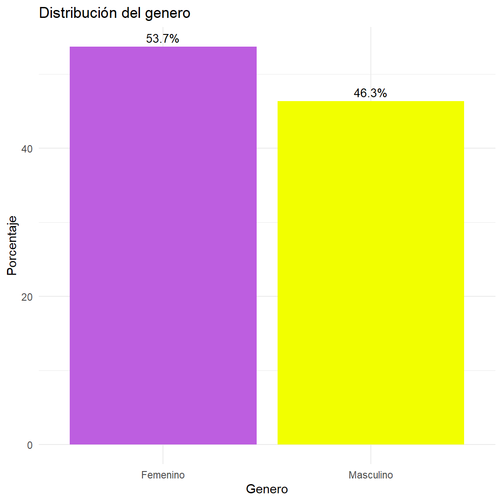
# Cargar las librerías necesarias
library(ggplot2)
library(dplyr)
library(readxl)
# Calcular los porcentajes de cada categoría en la variable GENERO
genero_counts <- educacion %>%
dplyr::count(Genero) %>%
mutate(porcentaje = n / sum(n) * 100)
# Crear el diagrama circular
ggplot(genero_counts, aes(x = "", y = porcentaje, fill = Genero)) +
geom_bar(stat = "identity", width = 1) +
scale_fill_manual(values = c("Femenino" = "#BD5EE0", "Masculino" = "#f2ff00")) +
coord_polar("y") +
labs(title = "Distribución del genero") +
theme_minimal() +
theme(axis.title.x = element_blank(),
axis.title.y = element_blank(),
panel.grid = element_blank(),
axis.text.x = element_blank()) +
geom_text(aes(label = sprintf("%.1f%%", porcentaje)),
position = position_stack(vjust = 0.5),
color = "white",
size = 4)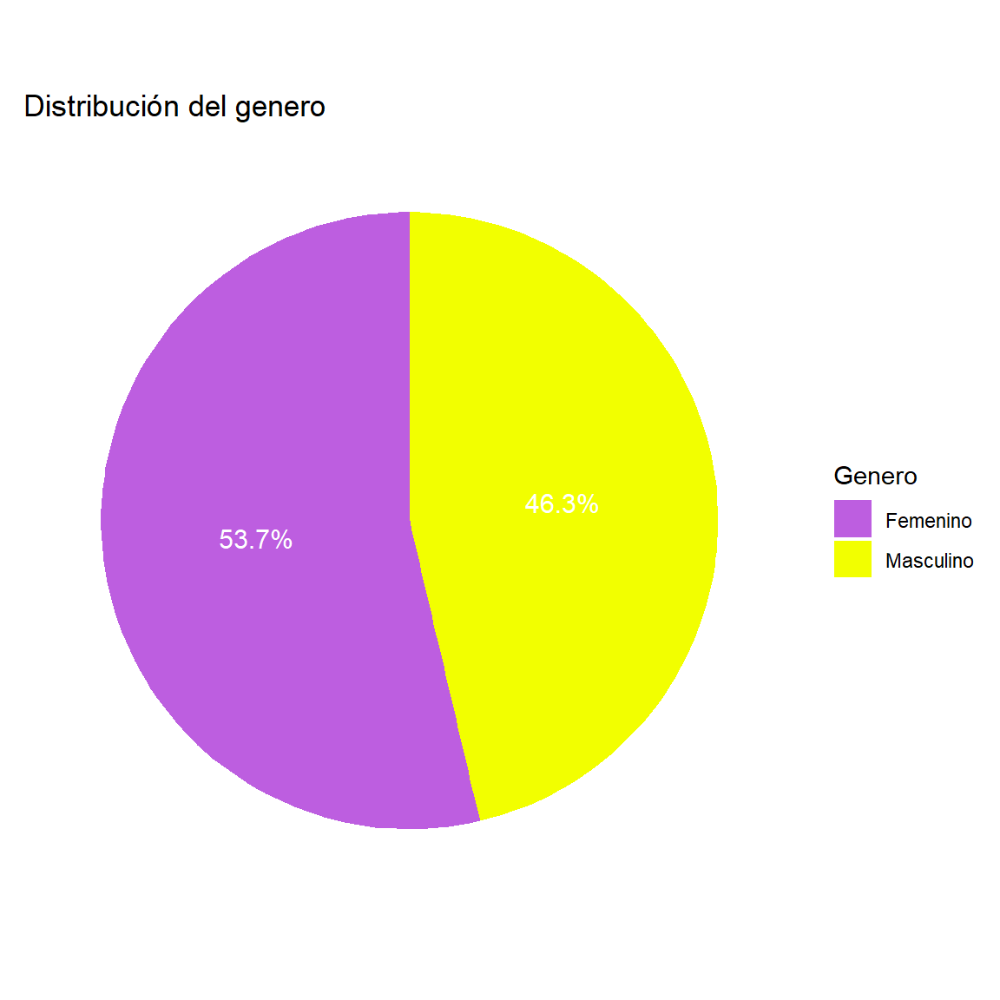
De acuerdo con los datos analizados en la Tabla 1 y el Diagrama de Barras, se observa que la muestra de 300 personas presenta una distribución donde el género Femenino representa el 53.7% (161 personas), mientras que el género Masculino constituye el 46.3% restantes (139 personas).
Variable cualitativa ordinal
AdvertenciaAdvertencia
La variable ordinal tiene los cuatro tipos de frecuencias
Nivel Educativo
Nivel_Educativo
# Crear la tabla original
tabla <- tibble(Nivel_Educativo= educacion$Nivel_Educativo) %>%
group_by(Nivel_Educativo) %>%
summarise(fi = n()) %>%
mutate(
hi = round(fi/sum(fi), 4),
Porcentaje = paste0(hi*100, "%"),
Fi = cumsum(fi),
Hi = cumsum(hi)
)
# Convertir las columnas Fucion, Fi, y Hi a character para evitar conflictos
tabla <- tabla %>% mutate(
Nivel_Educativo = as.character(Nivel_Educativo),
Fi = as.character(Fi),
Hi = as.character(Hi)
)
# Añadir la fila de totales, dejando Fi y Hi vacíos
totales <- tibble(
Nivel_Educativo = "Total",
fi = sum(tabla$fi),
hi = round(sum(tabla$hi), 4),
Porcentaje = paste0(round(sum(tabla$hi) * 100, 2), "%"),
Fi = "", # Puedes dejar en blanco o usar un valor numérico
Hi = "" # Puedes dejar en blanco o usar un valor numérico
)
# Combinar la tabla con los totales
tabla_final <- bind_rows(tabla, totales)
# Mostrar la tabla final con kable
tabla_final %>%
knitr::kable(
col.names = c("Nivel_Educativo", "fi", "hi", "Porcentaje", "Fi", "Hi"),
align = c("l", "c", "c", "c", "c", "c")
)| Nivel_Educativo | fi | hi | Porcentaje | Fi | Hi |
|---|---|---|---|---|---|
| Primaria | 93 | 0.31 | 31% | 93 | 0.31 |
| Secundaria | 105 | 0.35 | 35% | 198 | 0.66 |
| Universidad | 102 | 0.34 | 34% | 300 | 1 |
| Total | 300 | 1.00 | 100% |
# Cargar las librerías necesarias
library(ggplot2)
library(dplyr)
library(readxl)
# Calcular los porcentajes de cada categoría en la variable DEPORTE
Nivel_Educativo_counts <- educacion %>%
dplyr::count(Nivel_Educativo) %>%
mutate(porcentaje = n / sum(n) * 100)
# Crear el diagrama de barras
ggplot(Nivel_Educativo_counts, aes(x = Nivel_Educativo, y = porcentaje, fill = Nivel_Educativo)) +
geom_bar(stat = "identity") +
scale_fill_manual(values = c("Primaria" = "#f2ff00", "Secundaria" = "#6f00ff", "Universidad" = "#BEFA89")) +
labs(title = "Distribución del Nivel_Educativo",
x = "Nivel_Educativo",
y = "Porcentaje") +
theme_minimal() +
theme(legend.position = "none") +
geom_text(aes(label = sprintf("%.1f%%", porcentaje)),
vjust = -0.5,
color = "black",
size = 3.5)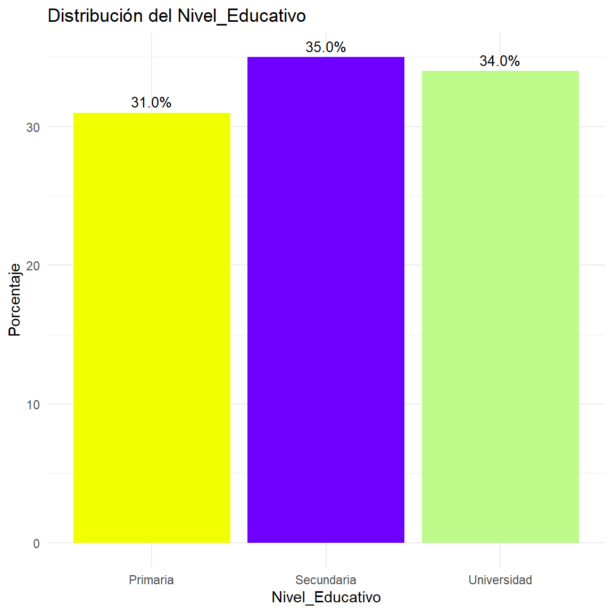
De una muestra total de 300 personas, se observa una distribución equilibrada entre los tres niveles educativos, donde el nivel Secundaria es el más predominante con un 35% (105 personas), seguido muy de cerca por el nivel Universidad con un 34% (102 personas) y, finalmente, el nivel Primaria con un 31% (93 personas). Esto indica que más de dos tercios de la población estudiada (69%) cuenta con estudios secundarios o superiores.
Estrato
# Crear la tabla original
tabla <- tibble(Estrato= educacion$Estrato) %>%
group_by(Estrato) %>%
summarise(fi = n()) %>%
mutate(
hi = round(fi/sum(fi), 4),
Porcentaje = paste0(hi*100, "%"),
Fi = cumsum(fi),
Hi = cumsum(hi)
)
# Convertir las columnas Fucion, Fi, y Hi a character para evitar conflictos
tabla <- tabla %>% mutate(
Estrato = as.character(Estrato),
Fi = as.character(Fi),
Hi = as.character(Hi)
)
# Añadir la fila de totales, dejando Fi y Hi vacíos
totales <- tibble(
Estrato = "Total",
fi = sum(tabla$fi),
hi = round(sum(tabla$hi), 4),
Porcentaje = paste0(round(sum(tabla$hi) * 100, 2), "%"),
Fi = "", # Puedes dejar en blanco o usar un valor numérico
Hi = "" # Puedes dejar en blanco o usar un valor numérico
)
# Combinar la tabla con los totales
tabla_final <- bind_rows(tabla, totales)
# Mostrar la tabla final con kable
tabla_final %>%
knitr::kable(
col.names = c("Estrato", "fi", "hi", "Porcentaje", "Fi", "Hi"),
align = c("l", "c", "c", "c", "c", "c")
)| Estrato | fi | hi | Porcentaje | Fi | Hi |
|---|---|---|---|---|---|
| Bajo | 97 | 0.3233 | 32.33% | 97 | 0.3233 |
| Medio | 102 | 0.3400 | 34% | 199 | 0.6633 |
| Alto | 101 | 0.3367 | 33.67% | 300 | 1 |
| Total | 300 | 1.0000 | 100% |
# Cargar las librerías necesarias
library(ggplot2)
library(dplyr)
library(readxl)
# Calcular los porcentajes de cada categoría en la variable DEPORTE
Estrato_counts <- educacion %>%
dplyr::count(Estrato) %>%
mutate(porcentaje = n / sum(n) * 100)
# Crear el diagrama de barras
ggplot(Estrato_counts, aes(x = Estrato, y = porcentaje, fill = Estrato)) +
geom_bar(stat = "identity") +
scale_fill_manual(values = c("Bajo" = "#6f00ff", "Medio" = "#40ff00", "Alto" = "#004cff")) +
labs(title = "Distribución del Estrato",
x = "Estrato",
y = "Porcentaje") +
theme_minimal() +
theme(legend.position = "none") +
geom_text(aes(label = sprintf("%.1f%%", porcentaje)),
vjust = -0.5,
color = "black",
size = 3.5)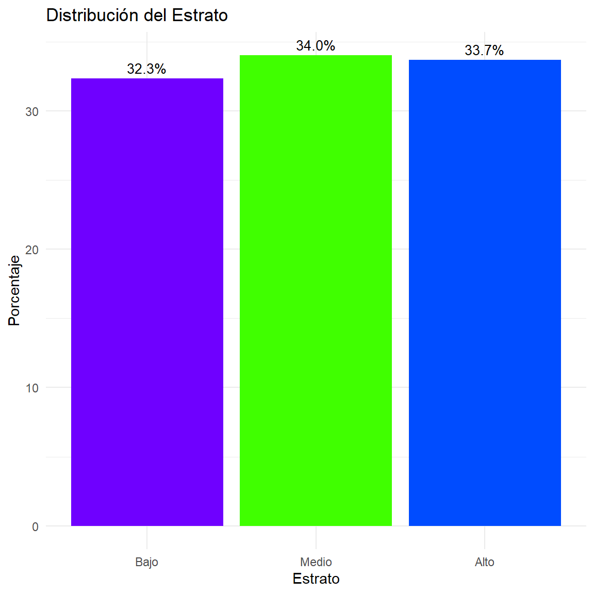
En la muestra de 300 personas, se presenta una distribución notablemente equitativa entre los tres niveles socioeconómicos, donde el Estrato Medio es el grupo mayoritario con un 34% (102 personas). El Estrato Alto le sigue muy de cerca con un 33.67% (101 personas), mientras que el Estrato Bajo representa el 32.33% (97 personas). Esta paridad porcentual indica que no existe una dominancia clara de un estrato sobre los otros en el grupo estudiado.
Tecnología
# Crear la tabla original
tabla <- tibble(Tecnologia= educacion$Tecnologia) %>%
group_by(Tecnologia) %>%
summarise(fi = n()) %>%
mutate(
hi = round(fi/sum(fi), 4),
Porcentaje = paste0(hi*100, "%"),
Fi = cumsum(fi),
Hi = cumsum(hi)
)
# Convertir las columnas Fucion, Fi, y Hi a character para evitar conflictos
tabla <- tabla %>% mutate(
Tecnologia = as.character(Tecnologia),
Fi = as.character(Fi),
Hi = as.character(Hi)
)
# Añadir la fila de totales, dejando Fi y Hi vacíos
totales <- tibble(
Tecnologia = "Total",
fi = sum(tabla$fi),
hi = round(sum(tabla$hi), 4),
Porcentaje = paste0(round(sum(tabla$hi) * 100, 2), "%"),
Fi = "", # Puedes dejar en blanco o usar un valor numérico
Hi = "" # Puedes dejar en blanco o usar un valor numérico
)
# Combinar la tabla con los totales
tabla_final <- bind_rows(tabla, totales)
# Mostrar la tabla final con kable
tabla_final %>%
knitr::kable(
col.names = c("Tecnologia", "fi", "hi", "Porcentaje", "Fi", "Hi"),
align = c("l", "c", "c", "c", "c", "c")
)| Tecnologia | fi | hi | Porcentaje | Fi | Hi |
|---|---|---|---|---|---|
| Bajo | 112 | 0.3733 | 37.33% | 112 | 0.3733 |
| Medio | 108 | 0.3600 | 36% | 220 | 0.7333 |
| Alto | 80 | 0.2667 | 26.67% | 300 | 1 |
| Total | 300 | 1.0000 | 100% |
# Cargar las librerías necesarias
library(ggplot2)
library(dplyr)
library(readxl)
# Calcular los porcentajes de cada categoría en la variable DEPORTE
Tecnologia_counts <- educacion %>%
dplyr::count(Tecnologia) %>%
mutate(porcentaje = n / sum(n) * 100)
# Crear el diagrama de barras
ggplot(Tecnologia_counts, aes(x = Tecnologia, y = porcentaje, fill = Tecnologia)) +
geom_bar(stat = "identity") +
scale_fill_manual(values = c("Bajo" = "#0837a6", "Medio" = "#748bc2", "Alto" = "#0062aF")) +
labs(title = "Distribución de Tecnologia",
x = "Tecnologia",
y = "Porcentaje") +
theme_minimal() +
theme(legend.position = "none") +
geom_text(aes(label = sprintf("%.1f%%", porcentaje)),
vjust = -0.5,
color = "black",
size = 3.5)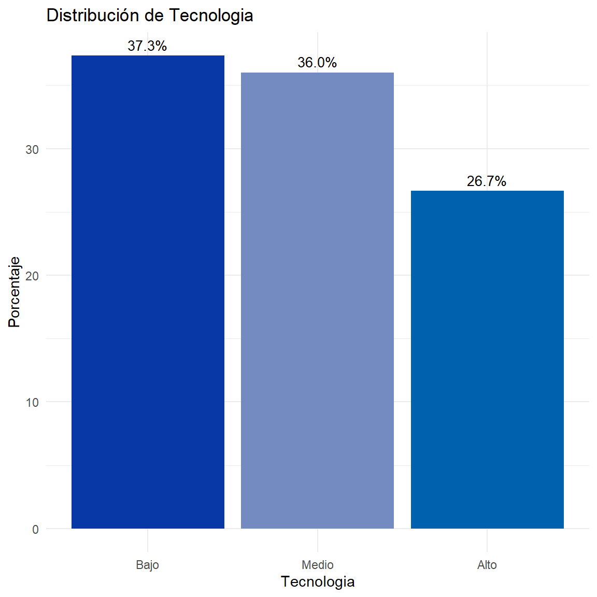
En el análisis de la muestra de 300 individuos, se identifica que la mayor parte de la población posee un nivel de tecnología Bajo, representando el 37.33% (112 personas), seguido por el nivel Medio con un 36% (108 personas). Por el contrario, el nivel de tecnología Alto es el menos frecuente, concentrando únicamente al 26.67% (80 personas). Estos resultados revelan que casi tres cuartas partes de los encuestados (73.33%) se sitúan en niveles tecnológicos bajos o moderados.
Satisfacción
library(dplyr)
library(knitr)
# 1. Crear la tabla base
tabla <- educacion %>%
group_by(Satisfaccion) %>%
summarise(fi = n()) %>%
mutate(
hi = round(fi/sum(fi), 4),
Porcentaje = paste0(hi * 100, "%"),
Fi = cumsum(fi),
Hi = cumsum(hi)
)
# 2. Preparar para combinar (convertir a character para permitir celdas vacías en Total)
tabla <- tabla %>% mutate(
Satisfaccion = as.character(Satisfaccion),
Fi = as.character(Fi),
Hi = as.character(Hi)
)
# 3. Fila de totales
totales <- tibble(
Satisfaccion = "Total",
fi = sum(as.numeric(tabla$fi)),
hi = sum(as.numeric(tabla$hi)),
Porcentaje = paste0(round(hi * 100, 2), "%"),
Fi = "",
Hi = ""
)
# 4. Combinar
tabla_final <- bind_rows(tabla, totales)
# 5. Mostrar (Ahora sí hay 6 columnas y 6 nombres)
tabla_final %>%
knitr::kable(
format = "simple",
col.names = c("Satisfacción", "fi", "hi", "Porcentaje", "Fi", "Hi"),
align = "lccccc",
caption = "Distribución de Frecuencias de Satisfacción"
)| Satisfacción | fi | hi | Porcentaje | Fi | Hi |
|---|---|---|---|---|---|
| Muy baja | 48 | 0.1600 | 16% | 48 | 0.16 |
| Baja | 65 | 0.2167 | 21.67% | 113 | 0.3767 |
| Media | 55 | 0.1833 | 18.33% | 168 | 0.56 |
| Alta | 65 | 0.2167 | 21.67% | 233 | 0.7767 |
| Muy alta | 67 | 0.2233 | 22.33% | 300 | 1 |
| Total | 300 | 1.0000 | 100% |
# Cargar las librerías necesarias
library(ggplot2)
library(dplyr)
library(readxl)
# 1. Calcular los porcentajes
# He cambiado 'Tecnologia' por 'Satisfaccion' para que coincida con el gráfico
Satisfaccion_counts <- educacion %>%
dplyr::count(Satisfaccion) %>%
mutate(porcentaje = n / sum(n) * 100)
# 2. Crear el diagrama de barras
ggplot(Satisfaccion_counts, aes(x = Satisfaccion, y = porcentaje, fill = Satisfaccion)) +
geom_bar(stat = "identity") +
# Asegúrate de que los nombres aquí coincidan con los niveles de tu variable
scale_fill_manual(values = c(
"Muy baja" = "#DD44FF",
"Baja" = "#Cd00EE",
"Media" = "#FFb0A2",
"Alta" = "#CF1166",
"Muy alta" = "#cf0037"
)) +
labs(
title = "Distribución de Satisfacción",
x = "Nivel de Satisfacción",
y = "Porcentaje"
) +
theme_minimal() +
theme(legend.position = "none") +
# Etiquetas de texto sobre las barras
geom_text(aes(label = sprintf("%.1f%%", porcentaje)),
vjust = -0.5,
color = "black",
size = 3.5)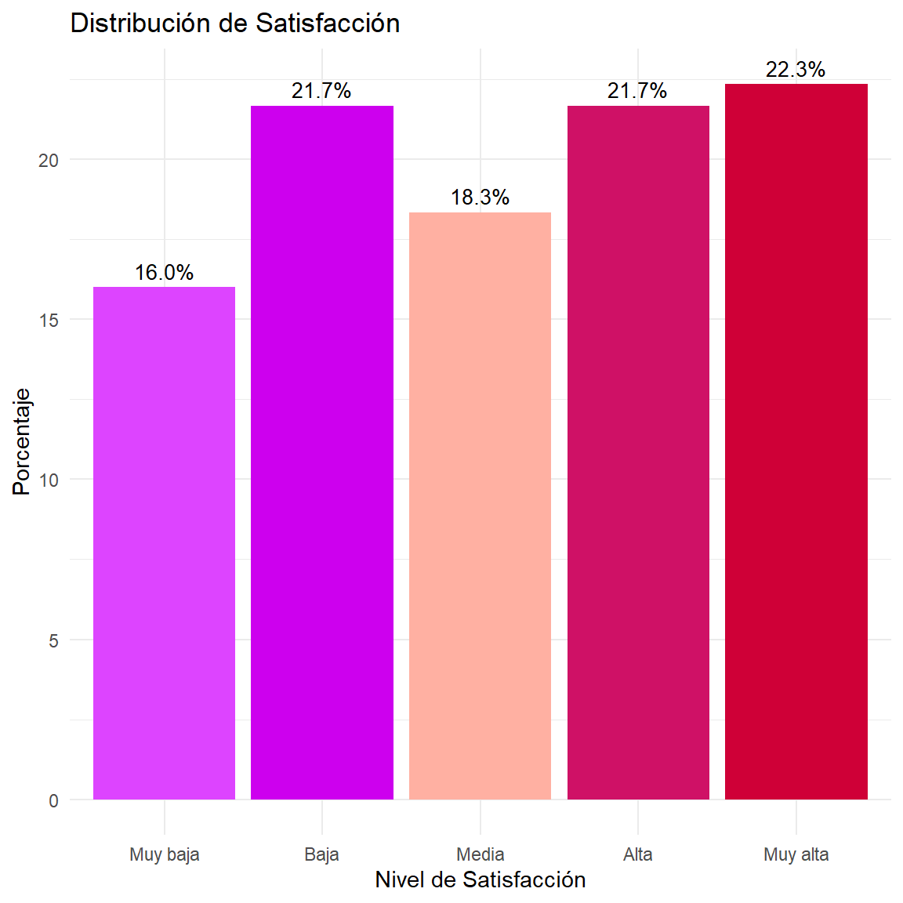
En el estudio realizado a las 300 personas, se observa una tendencia positiva en la percepción de los usuarios, donde el nivel Muy alta es el más frecuente con un 22.33% (67 personas). Al agrupar las categorías superiores, se evidencia que el 44% de la muestra (132 personas) reporta una satisfacción entre Alta y Muy alta. Por otro lado, la insatisfacción extrema (Muy baja) representa la minoría con un 16% (48 personas), lo que sugiere que la mayoría de los encuestados mantiene una valoración favorable o neutra respecto al servicio o producto evaluado.
Variable Discreta
AdvertenciaAdvertencia
La variable discreta tiene los cuatro tipos de frecuencias
Cursos
# Crear la tabla original
tabla <- tibble(Cursos = educacion$Cursos) %>%
group_by(Cursos) %>%
summarise(fi = n()) %>%
mutate(
hi = round(fi/sum(fi), 4),
Porcentaje = paste0(hi * 100, "%"),
Fi = cumsum(fi),
Hi = cumsum(hi)
)
# Convertir las columnas Personas, Fi, y Hi a character para evitar conflictos
tabla <- tabla %>% mutate(Cursos = as.character(Cursos),
Fi = as.character(Fi),
Hi = as.character(Hi)
)
# Añadir la fila de totales, dejando Fi y Hi vacíos
totales <- tibble(
Cursos = "Total",
fi = sum(tabla$fi),
hi = round(sum(tabla$hi), 2),
Porcentaje = paste0(round(sum(tabla$hi) * 100, 2), "%"),
Fi = "", # Puedes dejar en blanco o usar un valor numérico
Hi = "" # Puedes dejar en blanco o usar un valor numérico
)
# Combinar la tabla con los totales
tabla_final <- bind_rows(tabla, totales)
# Mostrar la tabla final con kable
tabla_final %>%
knitr::kable(
col.names = c("N Cursos", "fi", "hi", "Porcentaje", "Fi", "Hi"),
align = c("l", "r", "r", "r", "r", "r")
)| N Cursos | fi | hi | Porcentaje | Fi | Hi |
|---|---|---|---|---|---|
| 1 | 41 | 0.1367 | 13.67% | 41 | 0.1367 |
| 2 | 40 | 0.1333 | 13.33% | 81 | 0.27 |
| 3 | 25 | 0.0833 | 8.33% | 106 | 0.3533 |
| 4 | 40 | 0.1333 | 13.33% | 146 | 0.4866 |
| 5 | 37 | 0.1233 | 12.33% | 183 | 0.6099 |
| 6 | 41 | 0.1367 | 13.67% | 224 | 0.7466 |
| 7 | 38 | 0.1267 | 12.67% | 262 | 0.8733 |
| 8 | 38 | 0.1267 | 12.67% | 300 | 1 |
| Total | 300 | 1.0000 | 100% |
# valores de la variable
x <- c(1, 2, 3, 4, 5, 6, 7,8)
# f.m.p.
fx <- c(0.1367, 0.1333, 0.0833, 0.1333, 0.1233, 0.1367, 0.1267, 0.1267)
# Crear un dataframe con los datos
df <- data.frame(x = x, fx = fx)
# Gráfico con ggplot2
ggplot(df, aes(x = x, y = fx)) +
geom_point(shape = 18, color = "Red") +
geom_segment(aes(xend = x, yend = 0), size = 1, color = "blue") +
labs(x = "N de Cursos", y = "Porcentaje", title = "Diagrama de bastones") +
theme_minimal() +
geom_text(aes(label = fx), vjust = -0.5)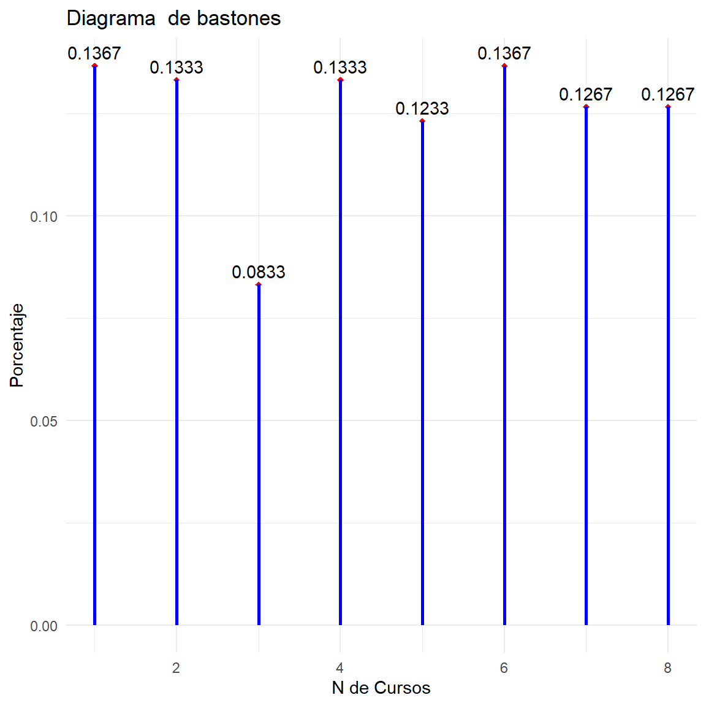
# Cargar librerías
library(ggplot2)
library(tibble)
# Crear datos
df <- tibble(
x = c(1, 2, 3, 4, 5, 6, 7, 8),
Hi = c(0.1367, 0.27, 0.3533, 0.4866, 0.6099, 0.7466, 0.8733,1)
)
# Gráfica de función de distribución acumulada
ggplot(df, aes(x = x, y = Hi)) +
geom_step(color = "#1133FF", size = 1.2) + # línea escalonada (CDF)
geom_point(color = "#FF4C3C", size = 3) + # puntos
scale_x_continuous(breaks = df$x) +
scale_y_continuous(limits = c(0, 1)) +
labs(
title = "Función de Distribución de Cursos",
x = "N Cursos",
y = "Frecuencia relativa acumulada (Hi)"
) +
theme_minimal(base_size = 14) +
theme(
plot.title = element_text(face = "bold", hjust = 0.5),
panel.grid.minor = element_blank()
)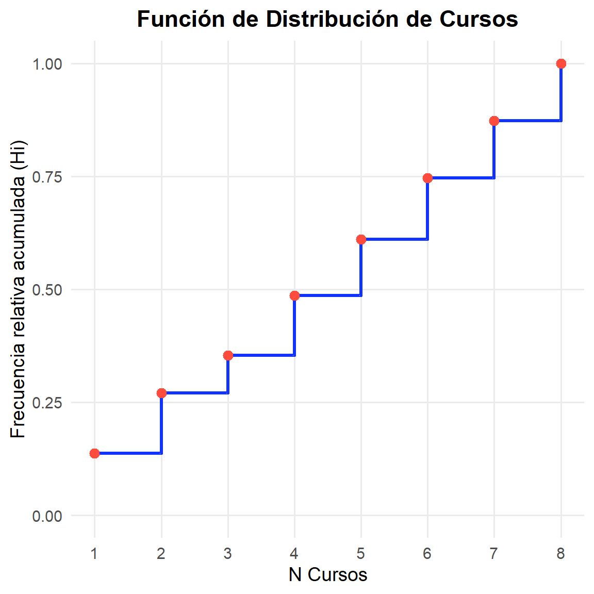
En la muestra de 300 personas, se observa una distribución dispersa y relativamente uniforme en la cantidad de cursos tomados, que oscila entre 1 y 8. Los valores más frecuentes (modas) son 1 y 6 cursos, cada uno con un 13.67% (41 personas). Es notable que aproximadamente la mitad de la muestra (48.66%) ha realizado 4 cursos o menos, mientras que el 51.34% restante ha tomado entre 5 y 8 cursos. El número mínimo de cursos (3) presenta la frecuencia más baja con solo un 8.33%, lo que indica que la gran mayoría de los encuestados tiende a situarse en los extremos o en el centro de la distribución.
Variable Continua
AdvertenciaAdvertencia
La variable continua se tabula con intervalos
Horas
Generacion de intervalos
library(readxl)
library(dplyr)
# 🔹 1. Cargar datos (AJUSTA LA RUTA)
educacion <- read_excel("educacion.xlsx")
# 🔹 2. Limpiar y convertir Promedio
educacion <- educacion %>%
mutate(
Horas = trimws(Horas),
Horas = gsub(",", ".",Horas),
Horas = as.numeric(Horas)
)
# 🔹 3. Tamaño de la muestra
n <- nrow(educacion)
# 🔹 4. Mínimo
Min <- min(educacion$Horas, na.rm = TRUE)
Min[1] 1.23library(readxl)
library(dplyr)
# 🔹 1. Cargar datos (AJUSTA LA RUTA)
educacion <- read_excel("educacion.xlsx")
# 🔹 2. Limpiar y convertir Promedio
educacion <- educacion %>%
mutate(
Horas = trimws(Horas),
Horas = gsub(",", ".", Horas),
Horas = as.numeric(Horas)
)
# 🔹 3. Tamaño de la muestra
n <- nrow(educacion)
Max <- max(educacion$Horas, na.rm = TRUE)
Max [1] 29.98R <- Max-Min
R[1] 28.75m <- ceiling(1 + 3.322*log10(nrow(educacion)))
m[1] 10A <- ceiling((R/m) * 1) / 1
A[1] 3RC <- A*m
RC[1] 30diferencia <- max(educacion$Horas, na.rm = TRUE) -
min(educacion$Horas, na.rm = TRUE)
diferencia[1] 28.75minimo <- min(educacion$Horas, na.rm = TRUE)
minimo_corregido <- minimo
minimo_corregido[1] 1.23Xmax <- Max+4
Xmax[1] 33.98library(dplyr)
library(ggplot2)
library(knitr)
library(kableExtra)
# Número de clases (Regla de Sturges)
k <- round(1 + 3.322 * log10(nrow(educacion)))
# Crear intervalos
tabla_horas <- educacion %>%
mutate(
clase = cut(Horas, breaks = k)
) %>%
group_by(clase) %>%
summarise(fi = n(), .groups = "drop") %>%
mutate(
hi = round(fi / sum(fi), 4),
Porcentaje = paste0(round(hi * 100, 2), "%"),
Fi = cumsum(fi),
Hi = cumsum(hi)
)
# Mostrar tabla
tabla_horas %>%
kable(
col.names = c("Intervalo (Horas)", "fi", "hi", "%", "Fi", "Hi"),
align = "c"
) %>%
kable_styling(bootstrap_options = c("striped", "hover"))| Intervalo (Horas) | fi | hi | % | Fi | Hi |
|---|---|---|---|---|---|
| (1.2,4.42] | 27 | 0.0900 | 9% | 27 | 0.0900 |
| (4.42,7.62] | 28 | 0.0933 | 9.33% | 55 | 0.1833 |
| (7.62,10.8] | 31 | 0.1033 | 10.33% | 86 | 0.2866 |
| (10.8,14] | 30 | 0.1000 | 10% | 116 | 0.3866 |
| (14,17.2] | 33 | 0.1100 | 11% | 149 | 0.4966 |
| (17.2,20.4] | 36 | 0.1200 | 12% | 185 | 0.6166 |
| (20.4,23.6] | 41 | 0.1367 | 13.67% | 226 | 0.7533 |
| (23.6,26.8] | 36 | 0.1200 | 12% | 262 | 0.8733 |
| (26.8,30] | 38 | 0.1267 | 12.67% | 300 | 1.0000 |
ggplot(educacion, aes(x = Horas)) +
geom_histogram(bins = k, fill = "#5FFDE2", color = "black") +
labs(
title = "Distribución de Horas de Estudio",
x = "Horas",
y = "Frecuencia"
) +
theme_minimal()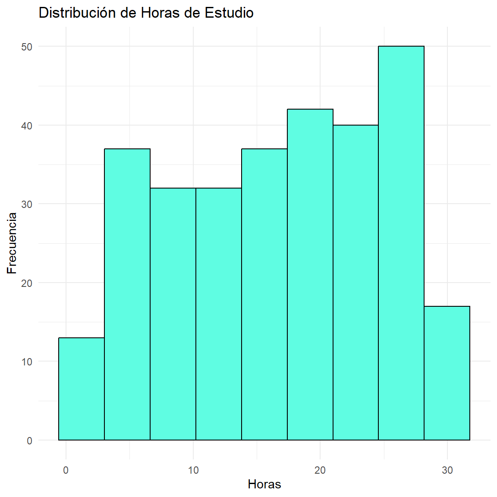
En la muestra de 300 personas, se observa que el tiempo dedicado al estudio varía desde un mínimo de 1.2 hasta un máximo de 30 horas. Existe una clara tendencia hacia una mayor carga horaria, siendo el intervalo de 20.4 a 23.6 horas el más frecuente con un 13.67% (41 personas). Asimismo, destaca que la mitad de la muestra (50.34%) dedica más de 17.2 horas al estudio, mientras que solo un 9% se sitúa en el rango más bajo (menos de 4.42 horas). Estos resultados sugieren que el grupo analizado mantiene, en su mayoría, un compromiso académico de intensidad media-alta.
Promedio
Generacion de intervalos
library(readxl)
library(dplyr)
# 🔹 1. Cargar datos (AJUSTA LA RUTA)
educacion <- read_excel("educacion.xlsx")
# 🔹 2. Limpiar y convertir Promedio
educacion <- educacion %>%
mutate(
Promedio = trimws(Promedio),
Promedio = gsub(",", ".", Promedio),
Promedio = as.numeric(Promedio)
)
# 🔹 3. Tamaño de la muestra
n <- nrow(educacion)
# 🔹 4. Mínimo
Min <- min(educacion$Promedio, na.rm = TRUE)
Min[1] 1.03library(readxl)
library(dplyr)
# 🔹 1. Cargar datos (AJUSTA LA RUTA)
educacion <- read_excel("educacion.xlsx")
# 🔹 2. Limpiar y convertir Promedio
educacion <- educacion %>%
mutate(
Promedio = trimws(Promedio),
Promedio = gsub(",", ".", Promedio),
Promedio = as.numeric(Promedio)
)
# 🔹 3. Tamaño de la muestra
n <- nrow(educacion)
Max <- max(educacion$Promedio, na.rm = TRUE)
Max [1] 4.99R <- Max-Min
R[1] 3.96m <- ceiling(1 + 3.322*log10(nrow(educacion)))
m[1] 10A <- ceiling((R/m) * 1) / 1
A[1] 1RC <- A*m
RC[1] 10diferencia <- max(educacion$Promedio, na.rm = TRUE) -
min(educacion$Promedio, na.rm = TRUE)
diferencia[1] 3.96minimo <- min(educacion$Promedio, na.rm = TRUE)
minimo_corregido <- minimo
minimo_corregido[1] 1.03Xmax <- Max+4
Xmax[1] 8.99library(dplyr)
library(ggplot2)
library(knitr)
library(kableExtra)
# Número de clases (Sturges)
k <- round(1 + 3.322 * log10(nrow(educacion)))
# Crear tabla agrupada
tabla_promedio <- educacion %>%
mutate(
clase = cut(Promedio, breaks = k)
) %>%
group_by(clase) %>%
summarise(fi = n(), .groups = "drop") %>%
mutate(
hi = round(fi / sum(fi), 4),
Porcentaje = paste0(round(hi * 100, 2), "%"),
Fi = cumsum(fi),
Hi = cumsum(hi)
)
# Mostrar tabla con colores
tabla_promedio %>%
kable(
col.names = c("Intervalo (Promedio)", "fi", "hi", "%", "Fi", "Hi"),
align = "c"
) %>%
kable_styling(
bootstrap_options = c("striped", "hover", "condensed"),
full_width = FALSE
) %>%
row_spec(0, bold = TRUE, color = "white", background = "#F39C12") %>%
column_spec(1, background = "#FCF3CF") %>%
column_spec(2, color = "#1BFF72") %>%
column_spec(3, color = "#11AC65") %>%
column_spec(4, color = "#B9FD0E") %>%
column_spec(5, color = "#6CC483") %>%
column_spec(6, color = "#925B21")| Intervalo (Promedio) | fi | hi | % | Fi | Hi |
|---|---|---|---|---|---|
| (1.03,1.47] | 35 | 0.1167 | 11.67% | 35 | 0.1167 |
| (1.47,1.91] | 35 | 0.1167 | 11.67% | 70 | 0.2334 |
| (1.91,2.35] | 25 | 0.0833 | 8.33% | 95 | 0.3167 |
| (2.35,2.79] | 28 | 0.0933 | 9.33% | 123 | 0.4100 |
| (2.79,3.23] | 39 | 0.1300 | 13% | 162 | 0.5400 |
| (3.23,3.67] | 40 | 0.1333 | 13.33% | 202 | 0.6733 |
| (3.67,4.11] | 30 | 0.1000 | 10% | 232 | 0.7733 |
| (4.11,4.55] | 32 | 0.1067 | 10.67% | 264 | 0.8800 |
| (4.55,4.99] | 36 | 0.1200 | 12% | 300 | 1.0000 |
ggplot(educacion, aes(x = Promedio)) +
geom_histogram(bins = k, fill = "#F3C041", color = "black") +
labs(
title = "Distribución del Promedio Académico",
x = "Promedio",
y = "Frecuencia"
) +
theme_minimal()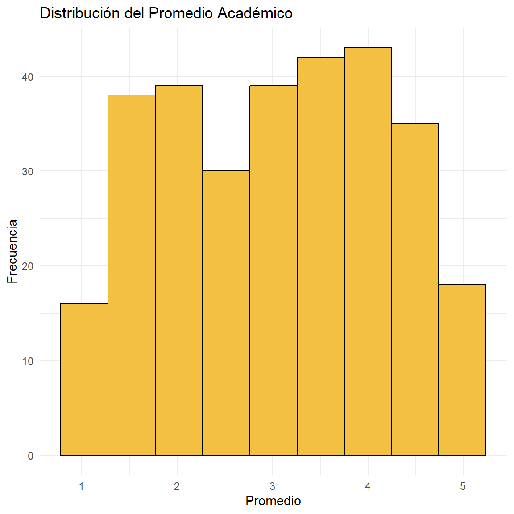
ggplot(tabla_promedio, aes(x = clase, y = fi, group = 1)) +
geom_line(color = "#D3CC00", size = 1) +
geom_point(color = "#92FB21", size = 3) +
labs(
title = "Polígono de Frecuencia - Promedio",
x = "Intervalos de Promedio",
y = "Frecuencia"
) +
theme_minimal()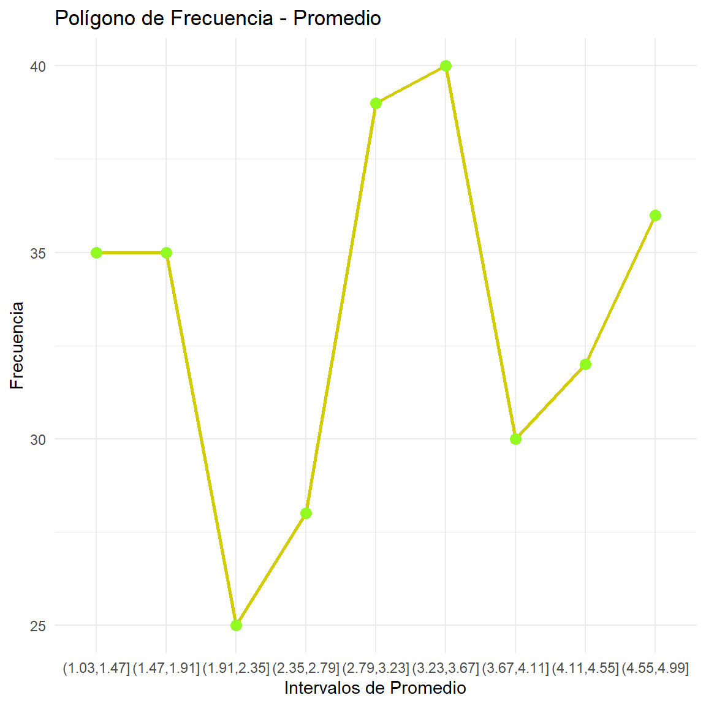
En el análisis de la muestra de 300 estudiantes, se observa que los promedios académicos presentan una distribución con una ligera inclinación hacia valores satisfactorios y altos. El intervalo con mayor concentración de alumnos es el de 3.23 a 3.67, que representa el 13.33% (40 personas) del total.
Es relevante destacar que más de la mitad de los estudiantes (59%) posee un promedio superior a 2.79, situándose en la parte media-alta de la escala. Por el contrario, el rango de 1.91 a 2.35 es el que cuenta con menor frecuencia, albergando únicamente al 8.33% de la muestra. En conjunto, los datos sugieren un rendimiento académico consistente, con una presencia significativa de promedios cercanos al nivel de excelencia (superiores a 4.0).
Asistencia
# 1. CARGAR LIBRERÍAS -----------------------------------------------------
library(readxl)
library(dplyr)
# 2. CARGAR DATOS ---------------------------------------------------------
# Asegúrate de que el archivo esté en la carpeta "Data"
educacion <- read_excel("educacion.xlsx")
# 3. LIMPIAR Y CONVERTIR VARIABLE -----------------------------------------
educacion <- educacion %>%
rename(Asistencia = `Asistencia (%)`) %>%
mutate(Asistencia = Asistencia %>%
trimws() %>% # 1. Quita espacios
gsub(",", ".", .) %>% # 2. Cambia coma por punto
as.numeric()) # 3. Convierte a número
# 4. CÁLCULO DE ESTADÍSTICOS ----------------------------------------------
# Tamaño de la muestra
n <- nrow(educacion)
# Valor Mínimo
Min <- min(educacion$Asistencia, na.rm = TRUE)
# Mostrar resultado
print(paste("El tamaño de la muestra es:", n))[1] "El tamaño de la muestra es: 300"print(paste("El valor mínimo de asistencia es:", Min))[1] "El valor mínimo de asistencia es: 50.17"library(readxl)
library(dplyr)
# 🔹 1. Cargar datos
educacion <- read_excel("educacion.xlsx")
# 🔹 2. Limpiar y convertir Asistencia
# Nota: Usamos `Asistencia (%)` porque es el nombre original en tu archivo
educacion <- educacion %>%
rename(Asistencia = `Asistencia (%)`) %>%
mutate(Asistencia = Asistencia %>%
trimws() %>% # 1. Quita espacios
gsub(",", ".", .) %>% # 2. Cambia coma por punto
as.numeric()) # 3. Convierte a número
# 🔹 3. Tamaño de la muestra
n <- nrow(educacion)
# 🔹 4. Máximo
Max <- max(educacion$Asistencia, na.rm = TRUE)
Max[1] 99.74R <- Max-Min
R[1] 49.57m <- ceiling(1 + 3.322*log10(nrow(educacion)))
m[1] 10A <- ceiling((R/m) * 1) / 1
A[1] 5RC <- A*m
RC[1] 50diferencia <- max(educacion$`Asistencia (%)`, na.rm = TRUE) -
min(educacion$`Asistencia (%)`, na.rm = TRUE)
diferencia[1] -Infminimo <- min(educacion$`Asistencia (%)`, na.rm = TRUE)
minimo_corregido <- minimo
minimo_corregido[1] InfXmax <- Max+4
Xmax[1] 103.74library(dplyr)
library(ggplot2)
library(knitr)
library(kableExtra)
# Número de clases (Sturges)
k <- round(1 + 3.322 * log10(nrow(educacion)))
# Crear tabla agrupada
tabla_asistencia <- educacion %>%
mutate(
clase = cut(Asistencia, breaks = k)
) %>%
group_by(clase) %>%
summarise(fi = n(), .groups = "drop") %>%
mutate(
hi = round(fi / sum(fi), 4),
Porcentaje = paste0(round(hi * 100, 2), "%"),
Fi = cumsum(fi),
Hi = cumsum(hi)
)
# Mostrar tabla con colores
tabla_asistencia %>%
kable(
col.names = c("Intervalo (%)", "fi", "hi", "%", "Fi", "Hi"),
align = "c"
) %>%
kable_styling(
bootstrap_options = c("striped", "hover", "condensed"),
full_width = FALSE
) %>%
row_spec(0, bold = TRUE, color = "white", background = "#2ECC71") %>%
column_spec(1, background = "#D5F5E3") %>%
column_spec(2, color = "#1BFF72") %>%
column_spec(3, color = "#11cc65") %>%
column_spec(4, color = "#B9D70E") %>%
column_spec(5, color = "#6C3483") %>%
column_spec(6, color = "#921B21")| Intervalo (%) | fi | hi | % | Fi | Hi |
|---|---|---|---|---|---|
| (50.1,55.7] | 41 | 0.1367 | 13.67% | 41 | 0.1367 |
| (55.7,61.2] | 34 | 0.1133 | 11.33% | 75 | 0.2500 |
| (61.2,66.7] | 38 | 0.1267 | 12.67% | 113 | 0.3767 |
| (66.7,72.2] | 23 | 0.0767 | 7.67% | 136 | 0.4534 |
| (72.2,77.7] | 25 | 0.0833 | 8.33% | 161 | 0.5367 |
| (77.7,83.2] | 18 | 0.0600 | 6% | 179 | 0.5967 |
| (83.2,88.7] | 40 | 0.1333 | 13.33% | 219 | 0.7300 |
| (88.7,94.2] | 42 | 0.1400 | 14% | 261 | 0.8700 |
| (94.2,99.8] | 39 | 0.1300 | 13% | 300 | 1.0000 |
# 1. Definir el número de intervalos (Regla de Sturges por ejemplo)
k <- ceiling(1 + log2(nrow(educacion)))
# 2. Crear el histograma corregido
ggplot(educacion, aes(x = Asistencia)) + # <--- Aquí faltaba el paréntesis )
geom_histogram(bins = k, fill = "#58cf8D", color = "black") +
labs(
title = "Distribución del Porcentaje de Asistencia",
x = "Asistencia",
y = "Frecuencia"
) +
theme_minimal()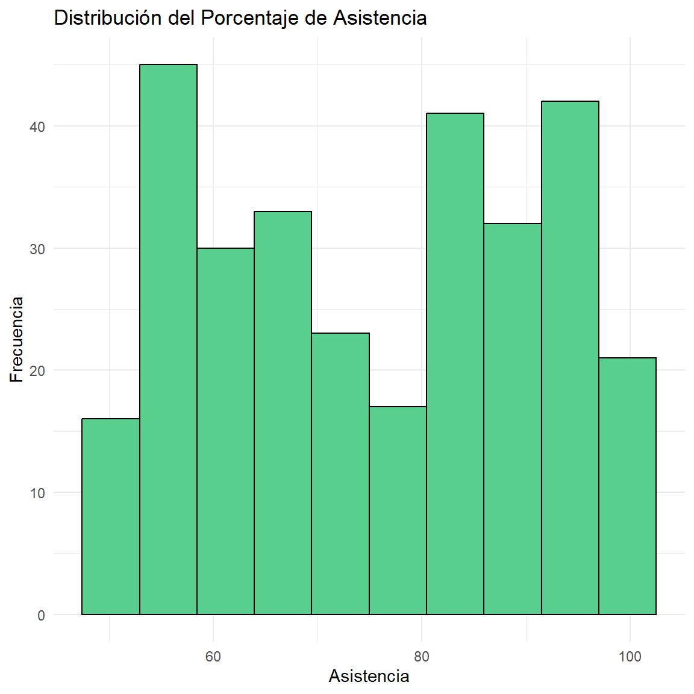
ggplot(tabla_asistencia, aes(x = clase, y = fi, group = 1)) +
geom_line(color = "#231C56", size = 1) +
geom_point(color = "#144F32", size = 3) +
labs(
title = "Polígono de Frecuencia - Asistencia",
x = "Intervalos de Asistencia (%)",
y = "Frecuencia"
) +
theme_minimal()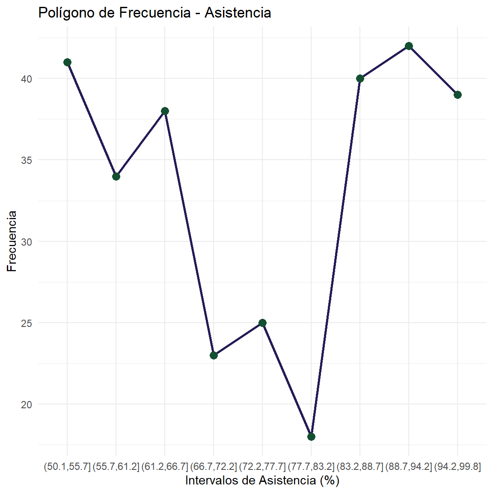
FALTA
Asistencia
Generacion de intervalos
# 1. CARGAR LIBRERÍAS -----------------------------------------------------
library(readxl)
library(dplyr)
# 2. CARGAR DATOS ---------------------------------------------------------
# Asegúrate de que el archivo esté en la carpeta "Data"
educacion <- read_excel("educacion.xlsx")
# 3. LIMPIAR Y CONVERTIR VARIABLE -----------------------------------------
educacion <- educacion %>%
rename(Asistencia = `Asistencia (%)`) %>%
mutate(Asistencia = Asistencia %>%
trimws() %>% # 1. Quita espacios
gsub(",", ".", .) %>% # 2. Cambia coma por punto
as.numeric()) # 3. Convierte a número
# 4. CÁLCULO DE ESTADÍSTICOS ----------------------------------------------
# Tamaño de la muestra
n <- nrow(educacion)
# Valor Mínimo
Min <- min(educacion$Asistencia, na.rm = TRUE)
# Mostrar resultado
print(paste("El tamaño de la muestra es:", n))[1] "El tamaño de la muestra es: 300"print(paste("El valor mínimo de asistencia es:", Min))[1] "El valor mínimo de asistencia es: 50.17"library(readxl)
library(dplyr)
# 🔹 1. Cargar datos
educacion <- read_excel("educacion.xlsx")
# 🔹 2. Limpiar y convertir Asistencia
# Nota: Usamos `Asistencia (%)` porque es el nombre original en tu archivo
educacion <- educacion %>%
rename(Asistencia = `Asistencia (%)`) %>%
mutate(Asistencia = Asistencia %>%
trimws() %>% # 1. Quita espacios
gsub(",", ".", .) %>% # 2. Cambia coma por punto
as.numeric()) # 3. Convierte a número
# 🔹 3. Tamaño de la muestra
n <- nrow(educacion)
# 🔹 4. Máximo
Max <- max(educacion$Asistencia, na.rm = TRUE)
Max[1] 99.74R <- Max-Min
R[1] 49.57m <- ceiling(1 + 3.322*log10(nrow(educacion)))
m[1] 10A <- ceiling((R/m) * 1) / 1
A[1] 5RC <- A*m
RC[1] 50diferencia <- max(educacion$`Asistencia (%)`, na.rm = TRUE) -
min(educacion$`Asistencia (%)`, na.rm = TRUE)
diferencia[1] -Infminimo <- min(educacion$`Asistencia (%)`, na.rm = TRUE)
minimo_corregido <- minimo
minimo_corregido[1] InfXmax <- Max+4
Xmax[1] 103.74library(dplyr)
library(ggplot2)
library(knitr)
library(kableExtra)
# Número de clases (Sturges)
k <- round(1 + 3.322 * log10(nrow(educacion)))
# Crear tabla agrupada
tabla_asistencia <- educacion %>%
mutate(
clase = cut(Asistencia, breaks = k)
) %>%
group_by(clase) %>%
summarise(fi = n(), .groups = "drop") %>%
mutate(
hi = round(fi / sum(fi), 4),
Porcentaje = paste0(round(hi * 100, 2), "%"),
Fi = cumsum(fi),
Hi = cumsum(hi)
)
# Mostrar tabla con colores
tabla_asistencia %>%
kable(
col.names = c("Intervalo (%)", "fi", "hi", "%", "Fi", "Hi"),
align = "c"
) %>%
kable_styling(
bootstrap_options = c("striped", "hover", "condensed"),
full_width = FALSE
) %>%
row_spec(0, bold = TRUE, color = "white", background = "#2ECC71") %>%
column_spec(1, background = "#D5F5E3") %>%
column_spec(2, color = "#1B4F72") %>%
column_spec(3, color = "#117A65") %>%
column_spec(4, color = "#B9770E") %>%
column_spec(5, color = "#6C3483") %>%
column_spec(6, color = "#922B21")| Intervalo (%) | fi | hi | % | Fi | Hi |
|---|---|---|---|---|---|
| (50.1,55.7] | 41 | 0.1367 | 13.67% | 41 | 0.1367 |
| (55.7,61.2] | 34 | 0.1133 | 11.33% | 75 | 0.2500 |
| (61.2,66.7] | 38 | 0.1267 | 12.67% | 113 | 0.3767 |
| (66.7,72.2] | 23 | 0.0767 | 7.67% | 136 | 0.4534 |
| (72.2,77.7] | 25 | 0.0833 | 8.33% | 161 | 0.5367 |
| (77.7,83.2] | 18 | 0.0600 | 6% | 179 | 0.5967 |
| (83.2,88.7] | 40 | 0.1333 | 13.33% | 219 | 0.7300 |
| (88.7,94.2] | 42 | 0.1400 | 14% | 261 | 0.8700 |
| (94.2,99.8] | 39 | 0.1300 | 13% | 300 | 1.0000 |
# 1. Definir el número de intervalos (Regla de Sturges por ejemplo)
k <- ceiling(1 + log2(nrow(educacion)))
# 2. Crear el histograma corregido
ggplot(educacion, aes(x = Asistencia)) + # <--- Aquí faltaba el paréntesis )
geom_histogram(bins = k, fill = "#58D68D", color = "black") +
labs(
title = "Distribución del Porcentaje de Asistencia",
x = "Asistencia",
y = "Frecuencia"
) +
theme_minimal()ggplot(tabla_asistencia, aes(x = clase, y = fi, group = 1)) +
geom_line(color = "#239B56", size = 1) +
geom_point(color = "#145A32", size = 3) +
labs(
title = "Polígono de Frecuencia - Asistencia",
x = "Intervalos de Asistencia (%)",
y = "Frecuencia"
) +
theme_minimal()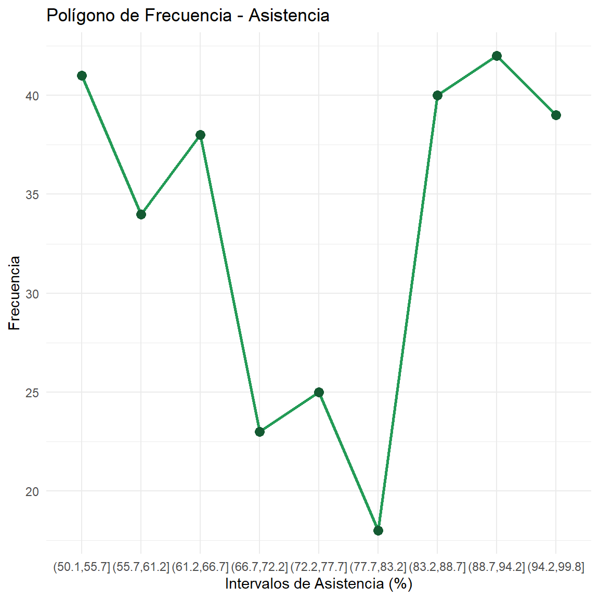
FALTA
Referencias